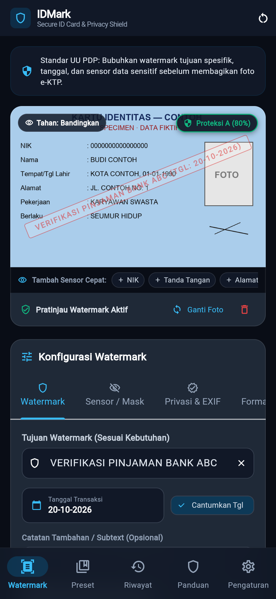
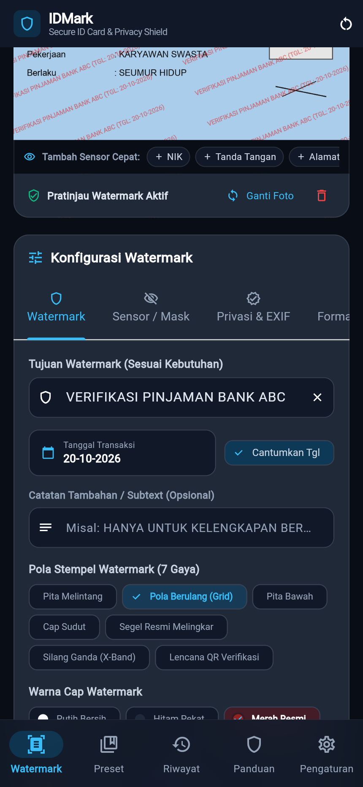
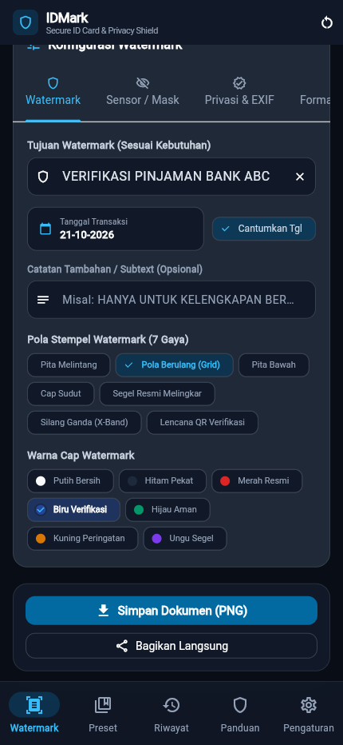
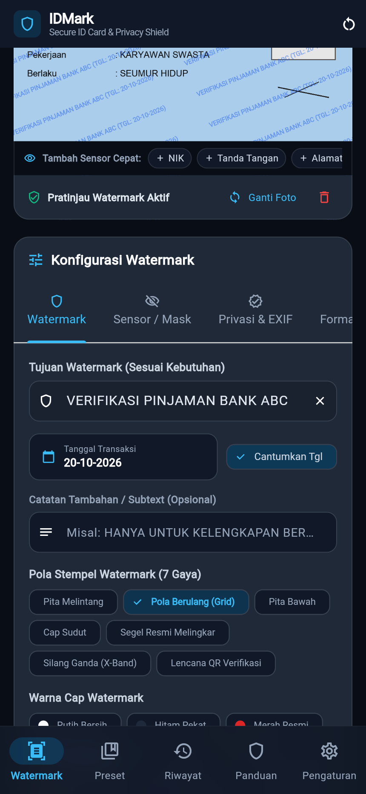

BAST idmark · BAST-FLOW-WMK-02
Mengatur pola, warna, dan opasitas cap
FLOW-WMK-02ROL-001MOD-001EP-001US-004US-005FR-004NFR-002
Pengguna mengganti pola cap menjadi grid berulang, memilih warna biru, dan melihat hasilnya langsung di pratinjau.
Langkah 1: Pilih foto
Di tab Watermark, ketuk Buka Galeri dan pilih foto identitas. Cap bawaan Pita Melintang merah tampil di pratinjau.

Langkah 2: Pilih pola Grid
Pada Pola Stempel Watermark (7 Gaya), ketuk Pola Berulang (Grid) untuk perlindungan menyeluruh.

Langkah 3: Pilih warna cap
Pada Warna Cap Watermark, ketuk Biru Verifikasi.

Langkah 4: Atur opasitas dan ukuran
Geser Tingkat Opasitas, Ukuran Teks Watermark, dan Kemiringan Sudut sampai cap terbaca jelas tanpa menutup data penting.

Langkah 5: Periksa pratinjau
Gulir ke atas: pratinjau memperlihatkan pola grid biru berulang di seluruh foto.

Hasil uji
| TC | Jenis | Lapis | Skenario | Hasil |
|---|---|---|---|---|
FLOW-WMK-02-T01 | positive | unit | pola, warna, dan opasitas tersimpan dan dipakai lagi saat app dibuka ulang | pass |
FLOW-WMK-02-T02 | negative | unit | opasitas di luar 10–100% ditolak dan konfigurasi tersimpan tidak berubah | pass |
FLOW-WMK-02-T03 | edge | unit | validateOpacity enforces 0.1 to 1.0 range | pass |
FLOW-WMK-02-T04 | corner | unit | ketujuh pola cap dirender tanpa galat dan mempertahankan ukuran gambar | pass |
FLOW-WMK-02-T05 | negative | unit | Invalid mutation throws ArgumentError | pass |
Direkam terhadap flutter build web (lokal) oleh FLOW-WMK-02-T01.